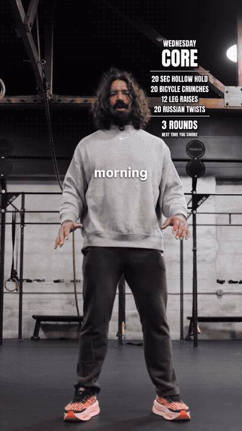
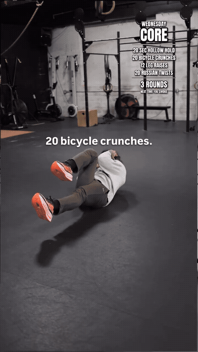
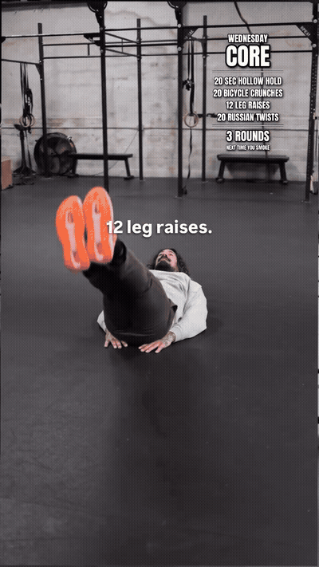

First prescribed movement in the source circuit; retained as its own card even though the reel gives no visual demonstration.

Second movement, visibly demonstrated in the source clip.

Third movement, visibly demonstrated in the source clip.

Fourth movement, visibly demonstrated in the source clip.
Do 3 rounds. The source explicitly prescribes three rounds. It does not specify a rest interval, load, or progression.
No substituted demonstration. Hollow hold is named in the source but not visually demonstrated. Its separate card preserves the prescription without using unrelated footage as if it were a demo.
Work within a comfortable range. Use controlled movement and stop for pain or concerning symptoms.